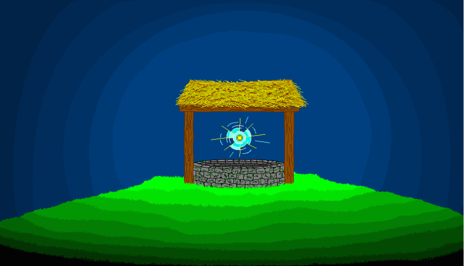

Be careful what you wish for…
There’s more to the old stone well than might seem. One moment you were casting a coin into the dark; the next, the darkness cast you into a sprawling, subterranean gauntlet! You are now a prisoner of the stone, lost in a winding maze of cold rock and ancient magic that feeds on the desires of those who fall in.
The exit is hidden somewhere in the labyrinth, but the well doesn't let go easily. To escape, you must navigate its shifting passages and face the weight of the very wish that pulled you under.
The well has taken your wish. Now, try to take back your freedom.
Escape the Labyrinth, Claim Your Legacy Your journey through the well is more than a struggle for survival—it’s a race against the dark. Every choice you make, item you find, and room you clear adds to your Final Score, reflecting your cunning and efficiency in navigating the subterranean gauntlet. Whether you find the exit or succumb to the stone, your progress is tracked in real-time.
Only the swiftest and most resourceful prisoners will see their names etched into the High Scores Scores page. Do you have what it takes to top the leaderboard, or will you become just another forgotten echo in the deep?